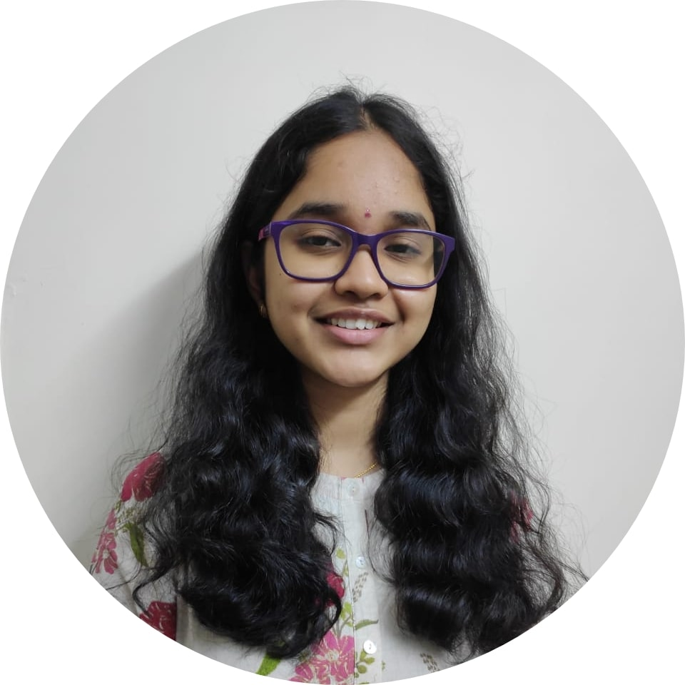

|  |
Vaijayanthi TappetaUndergraduate student I am a second year Computer Science and Enginering major at JNTUH College of Engineering, Hyderabad. In my free time I tend to nap, take a walk, listen to music, read a book, binge shows(mostly sitcoms), and documentaries. I am a huge Harry Potter fan (my favorite character is Hermoine, who's yours?), whenever I miss the wizarding universe I binge watch my favorite scenes and bloopers on YouTube, look at memes, read random facts, conspiracy theories on reddit or quora. I always enjoy a good conversation about self-care/personal growth. I am interested in knowing about the intersection of Computer Science with other fields. Link to: Contact Information. |
| S.No. | Course | Institution/School | Year of Passing | Percentage/CGPA |
|---|---|---|---|---|
| 1. | B.Tech+M.tech(Computer Science and Engineering) | JNTUH College of Engineering, Hyderabad | Expected 2024 | 9.17 (Upto 2nd semester) |
| 2. | Intermediate | Narayana Junior College | 2019 | 97.4% |
| 3. | S.S.C | Dr. K.K.R's Gowtham School | 2017 | 9.7 |